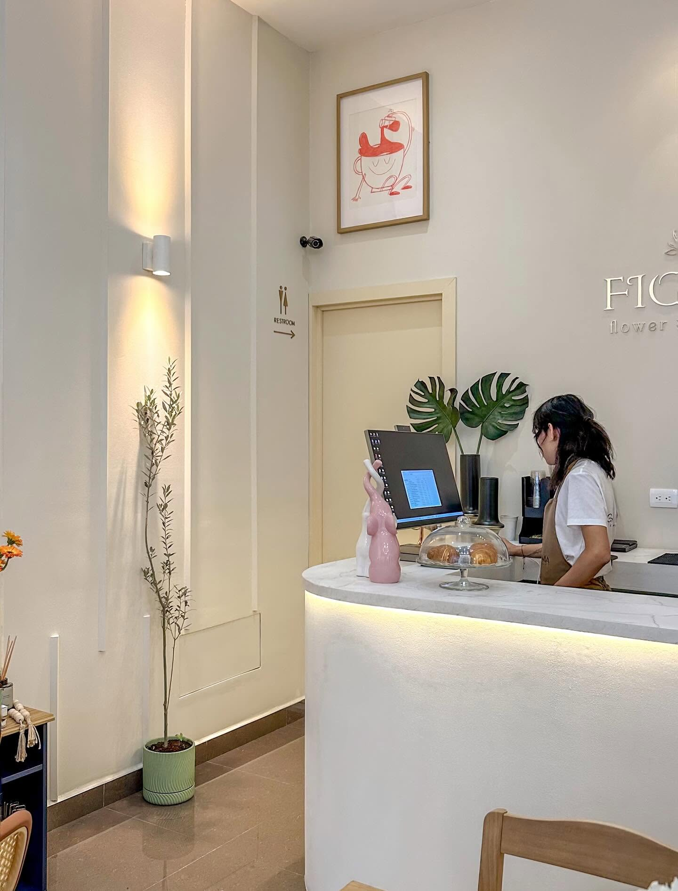
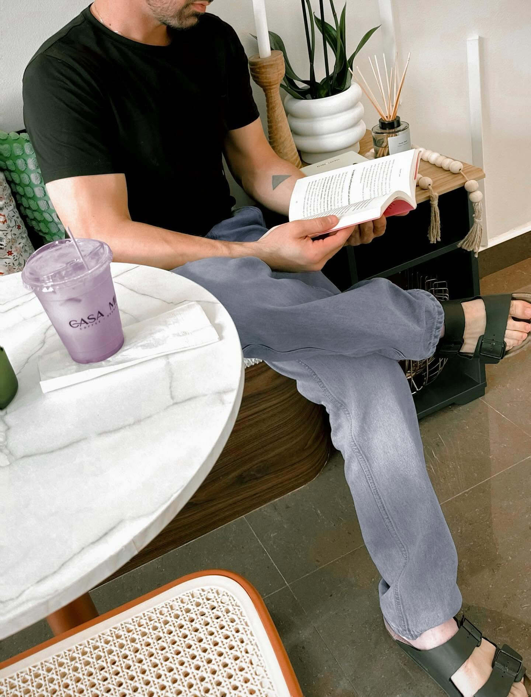
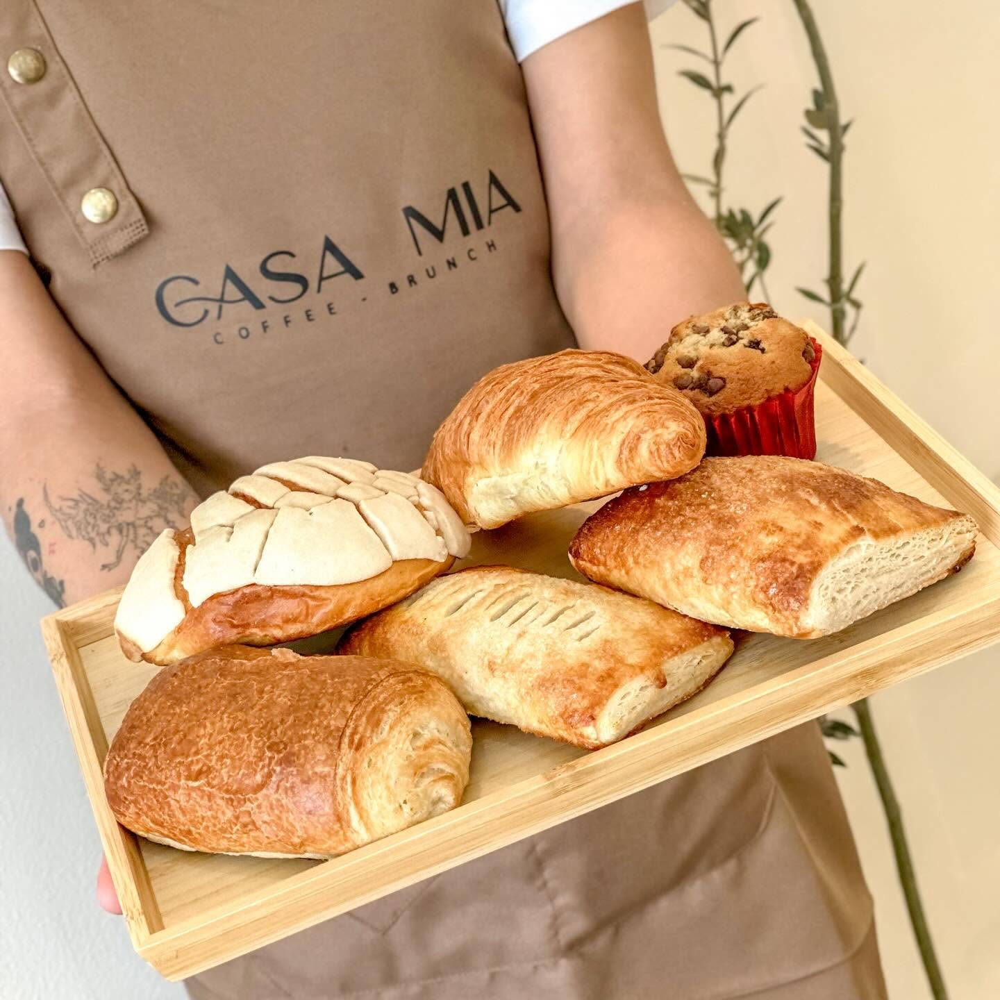

Como en casa,
pero con espresso

"No drama, just coffee." — nuestra filosofía en tres palabras.
De una idea sencilla
a un spot favorito
CASA MIA Coffee & Brunch abrió sus puertas en La Paz, Heroica Puebla de Zaragoza, con una convicción: el café también merece lujo, cuidado y una mesa donde sentarse con calma. No queríamos ser una cafetería más — queríamos ser el lugar al que la gente vuelve.
Cada receta, cada taza de cerámica hecha a mano y cada rincón del espacio se pensaron para que quien cruce la puerta sienta exactamente eso: que está en casa, mía y suya a la vez.

"Nothing is better than fresh baking" — horneamos todos los días.
Café con intención,
brunch con alma
Creemos en el detalle: en un batidor de bambú para el matcha ceremonial, en flores comestibles sobre los chilaquiles, en un macaron con forma de oso que hace sonreír a quien lo pide. El lujo, para nosotros, no es exceso — es cuidado.
Calidad de origen
Grano seleccionado, matcha ceremonial y frutos frescos en cada receta.
Detalle artesanal
Cada bebida y platillo se sirve como si fuera para alguien de casa.
Espacio para quedarse
Arcos, luz cálida y rincones pensados para leer, trabajar o platicar.
Un vistazo a CASA MIA
Ven a conocer tu nuevo lugar favorito
La Paz, Heroica Puebla de Zaragoza — te esperamos con la mesa lista.